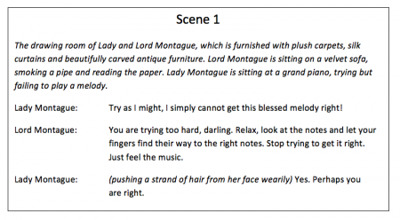

Introduction to Story Script¶
How would you write an interactive story? Well, stage plays have already solved this problem in their scripts.
These stage scripts contain different lines that either contain dialogue or stage directions, which together describe a scene in a play.
Similar to plays, stories are written in Fractural VNE by writing scripts. The scripts that Fractural VNE uses are called "Story Scripts".
Story scripts are stored in files that use the .storyscript file extension.
Story scripts are made up of different statements, which determine how a story unfolds.
Note
Story scripts uses a programming language with syntax similar to Ren'py. In the future there may also be rewrites to accomodate for a more writer-centric approach, like NaniNovel's programming language.